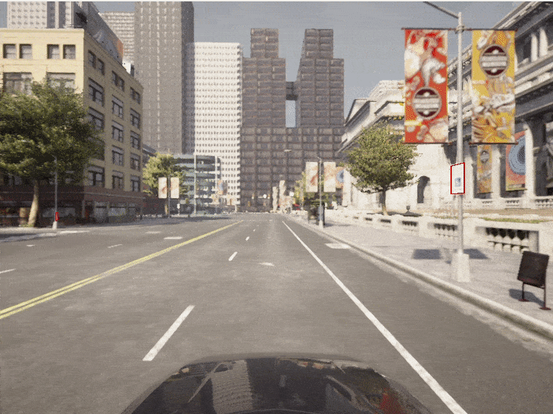

边界框¶
使自动驾驶车辆了解其环境的一个重要因素在于估计车辆周围物体的位置和方向。为此，有必要推断对象边界框的位置。
Carla 模拟中的对象都有一个边界框，并且 Carla Python API 提供了访问每个对象的边界框的函数。本教程展示如何访问边界框，然后将它们投影到相机平面中。
设置模拟器¶
让我们编写标准 Carla 样板代码，设置客户端和世界对象，生成车辆并为其附加相机：
import carla
import math
import random
import time
import queue
import numpy as np
import cv2
client = carla.Client('localhost', 2000)
world = client.get_world()
bp_lib = world.get_blueprint_library()
# 获取地图的生成点
spawn_points = world.get_map().get_spawn_points()
# 生成车辆
vehicle_bp =bp_lib.find('vehicle.lincoln.mkz_2020')
vehicle = world.try_spawn_actor(vehicle_bp, random.choice(spawn_points))
# 生成相机
camera_bp = bp_lib.find('sensor.camera.rgb')
camera_init_trans = carla.Transform(carla.Location(z=2))
camera = world.spawn_actor(camera_bp, camera_init_trans, attach_to=vehicle)
vehicle.set_autopilot(True)
# 以同步模式设置模拟器
settings = world.get_settings()
settings.synchronous_mode = True # 启用同步模式
settings.fixed_delta_seconds = 0.05
world.apply_settings(settings)
# 创建一个队列来存储和检索传感器数据
image_queue = queue.Queue()
camera.listen(image_queue.put)
几何变换¶
我们想要从模拟中获取三维点并将它们投影到相机的二维平面中。首先，我们需要构造相机投影矩阵：
def build_projection_matrix(w, h, fov):
focal = w / (2.0 * np.tan(fov * np.pi / 360.0))
K = np.identity(3)
K[0, 0] = K[1, 1] = focal
K[0, 2] = w / 2.0
K[1, 2] = h / 2.0
return K
我们想要使用相机投影矩阵将三维点投影到二维点。第一步是使用可通过 camera.get_transform().get_inverse_matrix() 检索的逆相机变换，将世界坐标中的三维坐标变换为相机坐标。接下来，我们使用相机投影矩阵将相机坐标中的三维点投影到二维相机平面中：
def get_image_point(loc, K, w2c):
# 计算三维坐标的二维投影
# 设置输入坐标的格式（loc是一个carla.Position对象）
point = np.array([loc.x, loc.y, loc.z, 1])
# 变换到相机坐标
point_camera = np.dot(w2c, point)
# 新的，我们必须从UE4的坐标系更改为“standard”
# (x, y ,z) -> (y, -z, x)
# 我们还去掉了第四个成分
point_camera = [point_camera[1], -point_camera[2], point_camera[0]]
# 现在使用相机矩阵投影3D->2D
point_img = np.dot(K, point_camera)
# 正则化
point_img[0] /= point_img[2]
point_img[1] /= point_img[2]
return point_img[0:2]
现在我们有了投影 3D -> 2D 的功能，我们可以检索相机规格：
# 获取世界的相机矩阵
world_2_camera = np.array(camera.get_transform().get_inverse_matrix())
# Get the attributes from the camera
image_w = camera_bp.get_attribute("image_size_x").as_int()
image_h = camera_bp.get_attribute("image_size_y").as_int()
fov = camera_bp.get_attribute("fov").as_float()
# Calculate the camera projection matrix to project from 3D -> 2D
K = build_projection_matrix(image_w, image_h, fov)
边界框¶
Carla 对象都有一个关联的边界框。Carla 参与者 有一个 bounding_box 属性，该属性具有 carla.BoundingBox 对象类型。边界框的顶点可以通过 getter 函数.get_world_vertices()或 get_local_vertices() 之一检索。
需要注意的是，要获取世界坐标中边界框的三维坐标，您需要将参与者的变换(transform)作为该get_world_vertices()方法的参数，如下所示：
bounding_box.get_world_vertices(actor.get_transform())
对于地图中的物体，如建筑物、交通灯和路标，可以通过carla.World方法 get_level_bbs() 检索边界框get_level_bbs()。carla.CityObjectLabel 可以用作参数来将边界框列表过滤到相关对象：
# 检索关卡内交通灯的所有边界框
bounding_box_set = world.get_level_bbs(carla.CityObjectLabel.TrafficLight)
# 过滤列表以提取半径50m以内的边界框
nearby_bboxes = []
for bbox in bounding_box_set:
if bbox.location.distance(actor.get_transform().location) < 50:
nearby_bboxes.append()
可以使用参与者位置来进一步过滤该列表，以识别附近的对象，因此可能位于连接到参与者的相机的视野内。
为了在相机图像上绘制边界框，我们需要以适当的顺序连接顶点以创建边缘。为了实现这一点，我们需要以下边对列表：
edges = [[0,1], [1,3], [3,2], [2,0], [0,4], [4,5], [5,1], [5,7], [7,6], [6,4], [6,2], [7,3]]
渲染边界框¶
现在我们已经设置了几何投影和模拟，我们可以继续创建游戏循环并将边界框渲染到场景中。
# Set up the set of bounding boxes from the level
# We filter for traffic lights and traffic signs
bounding_box_set = world.get_level_bbs(carla.CityObjectLabel.TrafficLight)
bounding_box_set.extend(world.get_level_bbs(carla.CityObjectLabel.TrafficSigns))
# Remember the edge pairs
edges = [[0,1], [1,3], [3,2], [2,0], [0,4], [4,5], [5,1], [5,7], [7,6], [6,4], [6,2], [7,3]]
为了查看边界框，我们将使用 OpenCV 窗口来显示相机输出。
# Retrieve the first image
world.tick()
image = image_queue.get()
# Reshape the raw data into an RGB array
img = np.reshape(np.copy(image.raw_data), (image.height, image.width, 4))
# Display the image in an OpenCV display window
cv2.namedWindow('ImageWindowName', cv2.WINDOW_AUTOSIZE)
cv2.imshow('ImageWindowName',img)
cv2.waitKey(1)
现在我们将开始游戏循环：
while True:
# Retrieve and reshape the image
world.tick()
image = image_queue.get()
img = np.reshape(np.copy(image.raw_data), (image.height, image.width, 4))
# Get the camera matrix
world_2_camera = np.array(camera.get_transform().get_inverse_matrix())
for bb in bounding_box_set:
# Filter for distance from ego vehicle
if bb.location.distance(vehicle.get_transform().location) < 50:
# Calculate the dot product between the forward vector
# of the vehicle and the vector between the vehicle
# and the bounding box. We threshold this dot product
# to limit to drawing bounding boxes IN FRONT OF THE CAMERA
forward_vec = vehicle.get_transform().get_forward_vector()
ray = bb.location - vehicle.get_transform().location
if forward_vec.dot(ray) > 1:
# Cycle through the vertices
verts = [v for v in bb.get_world_vertices(carla.Transform())]
for edge in edges:
# Join the vertices into edges
p1 = get_image_point(verts[edge[0]], K, world_2_camera)
p2 = get_image_point(verts[edge[1]], K, world_2_camera)
# Draw the edges into the camera output
cv2.line(img, (int(p1[0]),int(p1[1])), (int(p2[0]),int(p2[1])), (0,0,255, 255), 1)
# Now draw the image into the OpenCV display window
cv2.imshow('ImageWindowName',img)
# Break the loop if the user presses the Q key
if cv2.waitKey(1) == ord('q'):
break
# Close the OpenCV display window when the game loop stops
cv2.destroyAllWindows()
现在我们将三维边界框渲染到图像中，以便我们可以在相机传感器输出中观察它们。

车辆边界框¶
我们可能还想渲染参与者的边界框，特别是车辆的边界框。
首先，让我们在模拟中添加一些其他车辆：
for i in range(50):
vehicle_bp = random.choice(bp_lib.filter('vehicle'))
npc = world.try_spawn_actor(vehicle_bp, random.choice(spawn_points))
if npc:
npc.set_autopilot(True)
检索第一张图像并像以前一样设置 OpenCV 显示窗口：
# Retrieve the first image
world.tick()
image = image_queue.get()
# Reshape the raw data into an RGB array
img = np.reshape(np.copy(image.raw_data), (image.height, image.width, 4))
# Display the image in an OpenCV display window
cv2.namedWindow('ImageWindowName', cv2.WINDOW_AUTOSIZE)
cv2.imshow('ImageWindowName',img)
cv2.waitKey(1)
现在我们使用修改后的游戏循环来绘制车辆边界框：
while True:
# Retrieve and reshape the image
world.tick()
image = image_queue.get()
img = np.reshape(np.copy(image.raw_data), (image.height, image.width, 4))
# Get the camera matrix
world_2_camera = np.array(camera.get_transform().get_inverse_matrix())
for npc in world.get_actors().filter('*vehicle*'):
# Filter out the ego vehicle
if npc.id != vehicle.id:
bb = npc.bounding_box
dist = npc.get_transform().location.distance(vehicle.get_transform().location)
# Filter for the vehicles within 50m
if dist < 50:
# Calculate the dot product between the forward vector
# of the vehicle and the vector between the vehicle
# and the other vehicle. We threshold this dot product
# to limit to drawing bounding boxes IN FRONT OF THE CAMERA
forward_vec = vehicle.get_transform().get_forward_vector()
ray = npc.get_transform().location - vehicle.get_transform().location
if forward_vec.dot(ray) > 1:
p1 = get_image_point(bb.location, K, world_2_camera)
verts = [v for v in bb.get_world_vertices(npc.get_transform())]
for edge in edges:
p1 = get_image_point(verts[edge[0]], K, world_2_camera)
p2 = get_image_point(verts[edge[1]], K, world_2_camera)
cv2.line(img, (int(p1[0]),int(p1[1])), (int(p2[0]),int(p2[1])), (255,0,0, 255), 1)
cv2.imshow('ImageWindowName',img)
if cv2.waitKey(1) == ord('q'):
break
cv2.destroyAllWindows()

二维边界框¶
训练神经网络来检测二维边界框而不是上面演示的三维边界框是很常见的。前面的脚本可以轻松扩展以生成二维边界框。我们只需要使用三维边界框的末端即可。对于渲染的每个边界框，我们找到图像坐标中最左边、最右边、最高和最低的投影顶点。
while True:
# Retrieve and reshape the image
world.tick()
image = image_queue.get()
img = np.reshape(np.copy(image.raw_data), (image.height, image.width, 4))
# Get the camera matrix
world_2_camera = np.array(camera.get_transform().get_inverse_matrix())
for npc in world.get_actors().filter('*vehicle*'):
# Filter out the ego vehicle
if npc.id != vehicle.id:
bb = npc.bounding_box
dist = npc.get_transform().location.distance(vehicle.get_transform().location)
# Filter for the vehicles within 50m
if dist < 50:
# Calculate the dot product between the forward vector
# of the vehicle and the vector between the vehicle
# and the other vehicle. We threshold this dot product
# to limit to drawing bounding boxes IN FRONT OF THE CAMERA
forward_vec = vehicle.get_transform().get_forward_vector()
ray = npc.get_transform().location - vehicle.get_transform().location
if forward_vec.dot(ray) > 1:
p1 = get_image_point(bb.location, K, world_2_camera)http://host.robots.ox.ac.uk/pascal/VOC/
verts = [v for v in bb.get_world_vertices(npc.get_transform())]
x_max = -10000
x_min = 10000
y_max = -10000
y_min = 10000
for vert in verts:
p = get_image_point(vert, K, world_2_camera)
# Find the rightmost vertex
if p[0] > x_max:
x_max = p[0]
# Find the leftmost vertex
if p[0] < x_min:
x_min = p[0]
# Find the highest vertex
if p[1] > y_max:
y_max = p[1]
# Find the lowest vertex
if p[1] < y_min:
y_min = p[1]
cv2.line(img, (int(x_min),int(y_min)), (int(x_max),int(y_min)), (0,0,255, 255), 1)
cv2.line(img, (int(x_min),int(y_max)), (int(x_max),int(y_max)), (0,0,255, 255), 1)
cv2.line(img, (int(x_min),int(y_min)), (int(x_min),int(y_max)), (0,0,255, 255), 1)
cv2.line(img, (int(x_max),int(y_min)), (int(x_max),int(y_max)), (0,0,255, 255), 1)
cv2.imshow('ImageWindowName',img)
if cv2.waitKey(1) == ord('q'):
break
cv2.destroyAllWindows()

导出边界框¶
渲染边界框对于我们确保边界框对于调试目的是正确的很有用。然而，如果我们想在训练神经网络时实际使用它们，我们将需要导出它们。用于自动驾驶和物体检测的常见数据存储库使用多种不同的格式，例如KITTI 或 PASCAL VOC 或 MicroSoft COCO 。
Pascal VOC 格式¶
这些数据集通常使用 JSON 或 XML 格式来存储注释。PASCAL VOC 格式有一个方便的 Python 库。
from pascal_voc_writer import Writer
...
...
...
while True:
# Retrieve the image
world.tick()
image = image_queue.get()
# Get the camera matrix
world_2_camera = np.array(camera.get_transform().get_inverse_matrix())
frame_path = 'output/%06d' % image.frame
# Save the image
image.save_to_disk(frame_path + '.png')
# Initialize the exporter
writer = Writer(frame_path + '.png', image_w, image_h)
for npc in world.get_actors().filter('*vehicle*'):
if npc.id != vehicle.id:
bb = npc.bounding_box
dist = npc.get_transform().location.distance(vehicle.get_transform().location)
if dist < 50:
forward_vec = vehicle.get_transform().get_forward_vector()
ray = npc.get_transform().location - vehicle.get_transform().location
if forward_vec.dot(ray) > 1:
p1 = get_image_point(bb.location, K, world_2_camera)
verts = [v for v in bb.get_world_vertices(npc.get_transform())]
x_max = -10000
x_min = 10000
y_max = -10000
y_min = 10000
for vert in verts:
p = get_image_point(vert, K, world_2_camera)
if p[0] > x_max:
x_max = p[0]
if p[0] < x_min:
x_min = p[0]
if p[1] > y_max:
y_max = p[1]
if p[1] < y_min:
y_min = p[1]
# Add the object to the frame (ensure it is inside the image)
if x_min > 0 and x_max < image_w and y_min > 0 and y_max < image_h:
writer.addObject('vehicle', x_min, y_min, x_max, y_max)
# Save the bounding boxes in the scene
writer.save(frame_path + '.xml')
对于模拟的每个渲染帧，您现在将导出一个随附的 XML 文件，其中包含帧中边界框的详细信息。

在 PASCAL VOC 格式中，XML 文件包含涉及随附图像文件、图像尺寸的信息，如果需要，还可以包括车辆类型等详细信息。
<!-- Example PASCAL VOC format file-->
<annotation>
<folder>output</folder>
<filename>023235.png</filename>
<path>/home/matt/Documents/temp/output/023235.png</path>
<source>
<database>Unknown</database>
</source>
<size>
<width>800</width>
<height>600</height>
<depth>3</depth>
</size>
<segmented>0</segmented>
<object>
<name>vehicle</name>
<pose>Unspecified</pose>
<truncated>0</truncated>
<difficult>0</difficult>
<bndbox>
<xmin>503</xmin>
<ymin>310</ymin>
<xmax>511</xmax>
<ymax>321</ymax>
</bndbox>
</object> <object>
<name>vehicle</name>
<pose>Unspecified</pose>
<truncated>0</truncated>
<difficult>0</difficult>
<bndbox>
<xmin>490</xmin>
<ymin>310</ymin>
<xmax>498</xmax>
<ymax>321</ymax>
</bndbox>
</object>
</annotation>
微软 COCO 格式¶
另一种流行的导出格式是 MicroSoft COCO 。COCO 格式使用 JSON 文件来保存对图像和注释的引用。该格式包括单个 JSON 文件字段中的图像和注释，以及有关数据集和许可证的信息。与某些其他格式相比，对所有收集的图像和所有相关注释的引用都位于同一文件中。
您应该创建一个类似于以下示例的 JSON 字典：
simulation_dataset = {
"info": {},
"licenses": [
{
"url": "http://creativecommons.org/licenses/by-nc-sa/2.0/",
"id": 1,
"name": "Attribution-NonCommercial-ShareAlike License"
}],
"images": [...,
{
"license": 1,
"file_name": "023235.png",
"height": 600,
"width": 800,
"date_captured": "2022-04-14 17:02:52",
"id": 23235
},
...
],
"categories": [...
{"supercategory": "vehicle", "id": 10, "name": "vehicle" },
...],
"annotations": [
...,
{
"segmentation": [],
"area": 9262.89,
"iscrowd": 0,
"image_id": 23235,
"bbox": [503.3, 310.4, 118.3, 78.3]
},
...
]
}
信息和许可证部分应相应填写或留空。模拟中的图像应存储在images字典字段中的数组中。边界框应存储在具有匹配 image_id 的annotations字典字段中。边界框存储为[x_min, y_min, width, height]。
然后可以使用 Python JSON 库将字典保存为 JSON 文件：
import json
with open('simulation_data.json', 'w') as json_file:
json.dump(simulation_dataset, json_file)
有关 COCO 数据格式的更多详细信息，请参见 此处 。
应该注意的是，在本教程中我们没有考虑重叠的边界框。为了在重叠的情况下识别前景边界框，需要进行额外的工作。